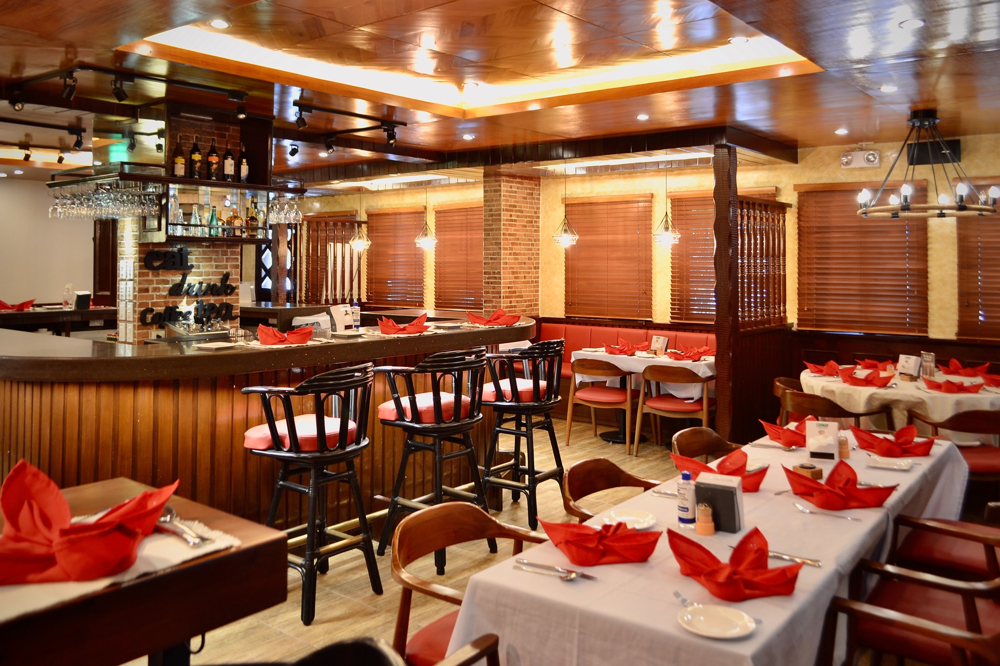

Founded in 1960, the Big Texan Steak Ranch is a famous dining destination along Route 66. A steakhouse is a type of restaurant specializing in beef cuts and hearty American fare, often featuring thick-cut steaks, baked potatoes, and classic Western-style sides.
7701 E I-40,Established:
March 1st, 1960
8:00am - 10:30 pm
Cattle ranching in Texas traces back to Spanish explorers who introduced longhorn cattle to the region in the 16th century. These hardy animals thrived across the Lone Star State, and beef quickly became the foundation of Texan cuisine. By the late 1800s, Texas had cemented its identity as the cattle capital of America, shaping the steakhouse tradition known across the country today.
Cattle ranching in Texas traces back to Spanish explorers who introduced longhorn cattle to the region in the 16th century. These hardy animals thrived across the Lone Star State, and beef quickly became the foundation of Texan cuisine. By the late 1800s, Texas had cemented its identity as the cattle capital of America, shaping the steakhouse tradition known across the country today.
Cattle ranching in Texas traces back to Spanish explorers who introduced longhorn cattle to the region in the 16th century. These hardy animals thrived across the Lone Star State, and beef quickly became the foundation of Texan cuisine. By the late 1800s, Texas had cemented its identity as the cattle capital of America, shaping the steakhouse tradition known across the country today.